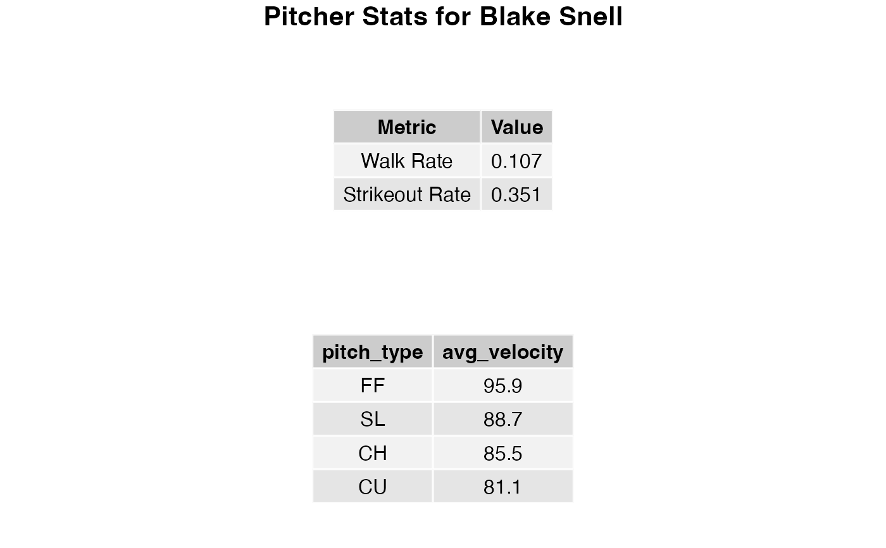
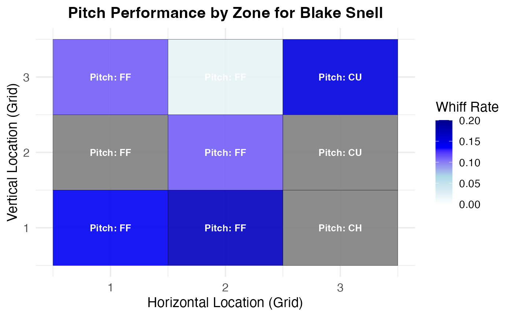

This function fetches Statcast data for a given pitcher or list of pitchers, calculates key performance metrics, and generates a strike zone heatmap displaying the most frequently used pitch type and whiff rate for each zone.
generate_pitcher(player_ids, start_date, end_date)A ggplot object showing the strike zone heatmap with the most frequently used pitch type and whiff rate for each zone.
Additionally, tables summarizing general pitching statistics and pitch-specific statistics are displayed in the viewer.
The function performs the following steps:
Fetches player names using the MLB Stats API.
Fetches Statcast data from Baseball Savant for the specified pitcher(s) and date range.
Calculates general statistics such as walk rate and strikeout rate.
Generates pitch-specific statistics such as the average velocity for each pitch type.
Creates a strike zone heatmap visualizing the most frequently used pitch type and the whiff rate in each strike zone location.
The results include a strike zone heatmap and summary tables for general and pitch-specific statistics.
This function requires an active internet connection to fetch data from the MLB Stats API and Baseball Savant.
# Example usage:
pitcher_ids <- c(605483) # Gerrit Cole
start_date <- "2024-01-01"
end_date <- "2024-12-31"
generate_pitcher(player_ids = pitcher_ids, start_date = start_date, end_date = end_date)
#> Fetching data for player 605483 ...

